전체 31건
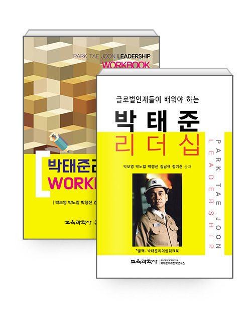
박태준 리더십 + 워크북 세트
박보영, 박노일, 박행신, 김남규, 정기준 공저 · 교육과학사+박태준미래전략연구소 · 2020-12-01
포스텍 박태준미래전략연구소(소장 김승환)가 발간한 『글로벌 인재들이 배워야 하는 박태준리더십』의 내용은 박태준이 주재한 포스코 임원 회의자�..
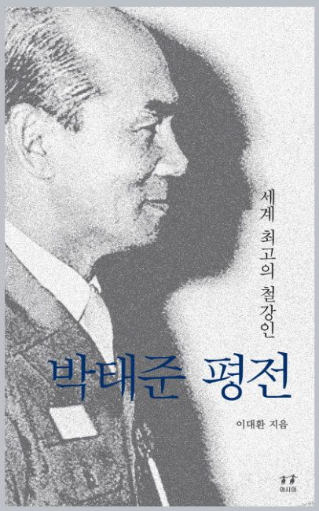
박태준 평전 - 세계 최고의 철강인
이대환 · 아시아 · 2016-12-01
철강신화 박태준 선생 5주기를 맞은 『박태준 평전』의 완결판!『박태준 평전: 세계 최고의 철강인』은 한국 산업화의 성공을 이끌 수 있었던 중요한 �..
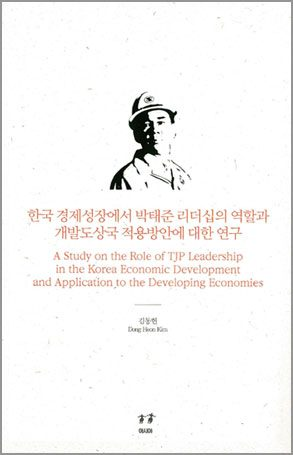
한국 경제성장에서 박태준 리더십의 역할과 개발도상국 적용방안에 대한 연구 - 박태준 연구 총서 8권
김동헌 · 아시아 · 2015-10-27
박태준 리더십과 포스코 성공사례를 개발도상국에 적용할 방안은 무엇인가?첫쨰, 포스코형 성장모형의 학습이다. 포스코형 성장모형의 핵심은 ①..
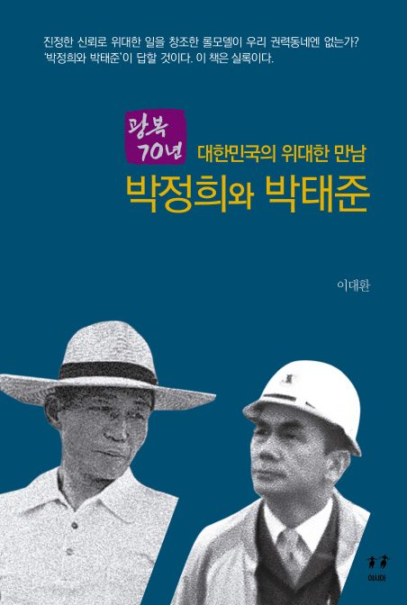
대한민국의 위대한 만남 박정희와 박태준
이대환 · 아시아 · 2015-08-15
‘진정한 신뢰, 완전한 신뢰란 무엇인가?’라는 질문에 확실한 대답을 주는 『대한민국의 위대한 만남 박정희와 박태준』은《박태준의 박정희 회고�..
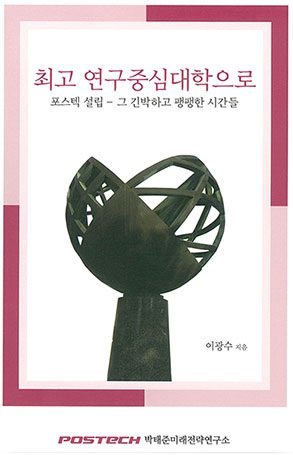
최고 연구중심대학으로 [포스텍 설립 - 그 긴박하고 팽팽한 시간들]
이광수, 역은이 : 박태준미래전략연구소 · 도서출판 새암 · 2015-02-15
더 타임(The TIME)의 세계 대학 평가 28위(2010년), 설립 50년 이내 세계 대학 평가 1위, 아시아 대학 평가 1위, 중앙일보의 국내 대학 평가 1위. 이들 순위는 �..
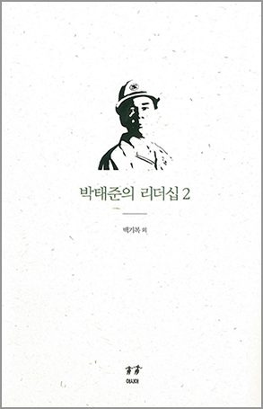
박태준의 리더십 2 - 박태준 연구 총서 7권
백기복, 김창호, 장영철, 김영헌 · 아시아 · 2014-12-13
영웅의 죽음은 곧잘 공적의 표상으로 되살아난다. 이것이 인간사회의 오랜 관습이다. 세상을 떠난 영웅에게는 또 하나의 피할 수 없는 운명으로 강요�..
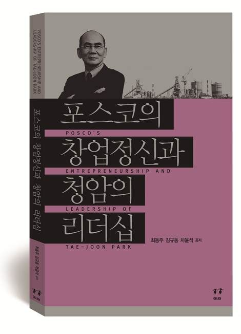
포스코의 창업정신과 청암의 리더십
최동주, 김규동, 차윤석 · 아시아 · 2014-8-15
이 책은 대한민국이 자랑하는 세계 최고의 철강 기업 포스코의 창업정신과 故 박태준 명예회장의 리더십 사례를 기반으로 기업의 혁신과 변혁, 리더십..
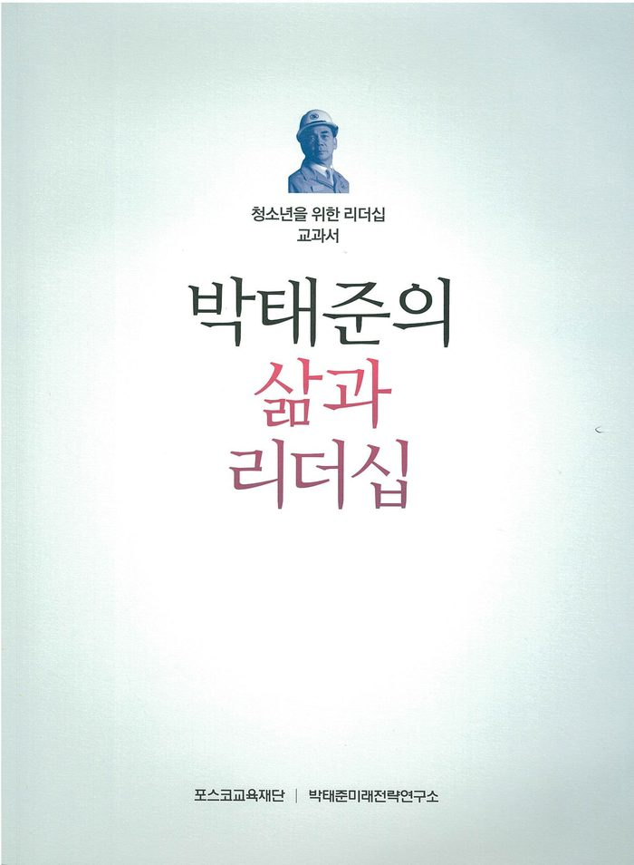
박태준의 삶과 리더십 (청소년을 위한 리더십 교과서)
박태준미래전략연구소, 포스코교육재단 · . · 2014-4-15
청암 박태준의 정신과 리더십에 대한 관심이 높아지면서 그분을 기억하고 공부하려는 움직임이 곳곳에서 일어나는 가운데 포스코교육재단과 박태준�..
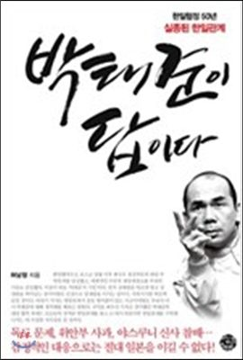
박태준이 답이다: 한일협정50년, 실종된 한일관계
허남정 · 씽크스마트 · 2014년 7월 10일
한일협력으로 포스코 설립 이후 한국은 철강부문의 대일 무역흑자를 달성했고, 세계적인 수준의 광양제철소를 우리의 기술로 건설했다. 이것이 바로 ..
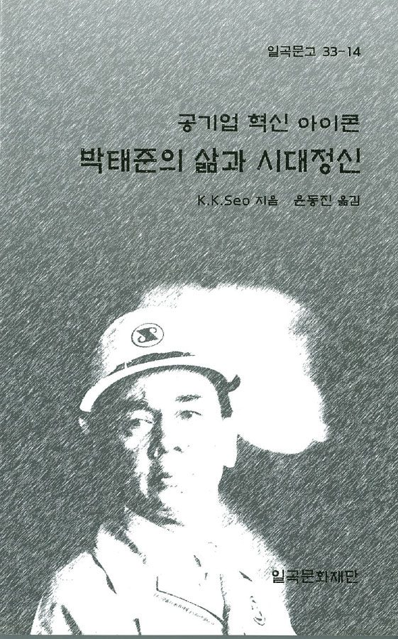
공기업 혁신 아이콘 '박태준의 삶과 시대정신'
서갑경 · 일곡문고 · 2014년 6월 25일
이 책은 한국의 경제기적을 대표하는 포항종합제철(포스코)의 창립자이며 제1대 회장을 역임한 박태준에 대한 이야기이다. 세계로부터 주목을 받고 있..
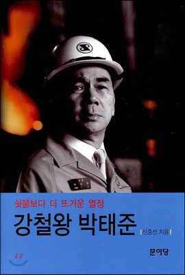
강철왕 박태준
신중선 저 · 문이당 · 2013년 12월 13일
청암 박태준 전 포스코 명예회장의 2주기를 맞아 박 회장의 일대기를 조명한 책이다. 그의 내면에 숨겨져 있는 자상하고 따뜻한 면모, 그 동안 외부에..
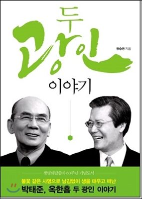
두 광인 이야기: 박태준ㆍ옥한흠
유승관 저 · 말씀사 · 2013년 8월 30일
옥한흠의 영적 제자로 30년, 박태준의 그림자로 20년두 거목의 멘티, 유승관 목사가 전하는 그들의 삶과 신앙그리고 그들이 남긴 위대한 유산!포스코 �..
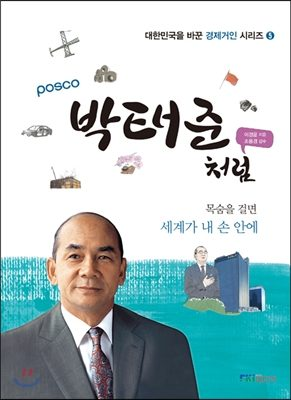
박태준처럼: 목숨을 걸면 세계가 내 손 안에(대한민국을 바꾼 경제거인-5)
이경윤 저/조용경 감수 · FKI미디어 · 2013년 4월 30일
국내 최초 종합제철소 건설에 성공한 포항제철(현 포스코)의 창업자인 박태준 회장의 역동적인 삶을 소설 형식을 빌려 흡입력 있게 재구성해 청소년�..
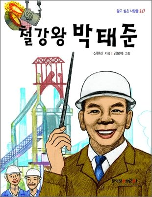
닮고 싶은 사람들-10 철강왕 박태준
신현신 글/김보혜 그림 · 문이당어린이 · 2012년 5월 25일
쇳물보다 뜨거운 열정으로 세계 최고의 철강왕이 된 박태준 무럭무럭 자라나는 어린이에게 꿈을 전해 줄『철강왕 박태준』이 출간되었습니다. ‘짧�..
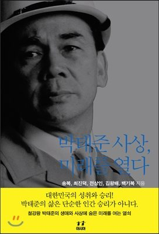
박태준 사상, 미래를 열다 - 박태준 연구 총서 6권
송복,최진덕,전상인,김왕배,백기복 공저/이대환 편 · 아시아 · 2012년 12월 13일
대한민국의 성취와 승리! 박태준의 삶은 단순한 인간 승리가 아니다. 철강왕 박태준의 생애와 사상에 숨은 미래를 여는 열쇠 청암 박태준 포스코 명�..
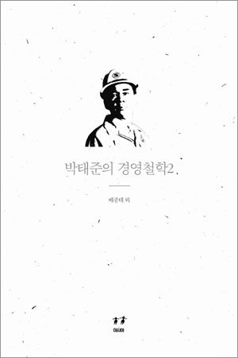
박태준의 경영철학 2 - 박태준 연구 총서 5권
박철순, 남윤성, 김병연, 최상오, 배종태, 허문구, 김창호, 박원구, 김정섭, 곽강수, 김대중, 강태영 · 아시아 · 2012년 4월 25일
포스코의 창업자 청암 박태준에 대한 학문적 연구의 첫 성과를 체계화한 [청암박태준연구총서] 전 5권. 2010년과 2011년에 이뤄진 기업가 청암 박태준의 ..
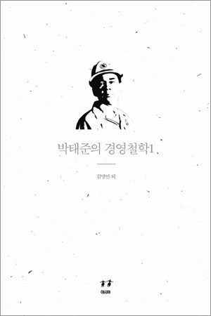
박태준의 경영철학 1 - 청암 박태준 연구 총서 4권
서상문, 배종태, 권상우, 박헌준, 김명언, 김예지, 박호환, 김동재 · 아시아 · 2012년 4월 25일
포스코의 창업자 청암 박태준에 대한 학문적 연구의 첫 성과를 체계화한 [청암박태준연구총서] 전 5권. 2010년과 2011년에 이뤄진 기업가 청암 박태준의 ..
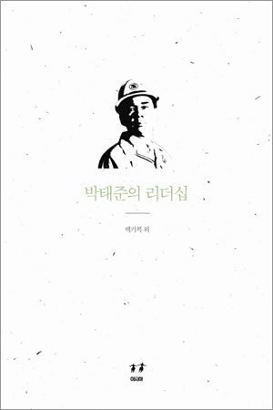
박태준의 리더십 - 청암 박태준 연구 총서 3권
백기복, 이상오, 이도화, 김창호, 이명식, 김명언, 이지영, 김민정 · 아시아 · 2012년 4월 25일
포스코의 창업자 청암 박태준에 대한 학문적 연구의 첫 성과를 체계화한 [청암박태준연구총서] 전 5권. 2010년과 2011년에 이뤄진 기업가 청암 박태준의 ..

박태준의 정신세계 - 청암 박태준 연구 총서 2권
최진덕, 김형효, 정인재, 서상문, 이상오, 임경순, 이영의, 강구영 · 아시아 · 2012년 4월 25일
포스코의 창업자 청암 박태준에 대한 학문적 연구의 첫 성과를 체계화한 [청암박태준연구총서] 전 5권. 2010년과 2011년에 이뤄진 기업가 청암 박태준의 ..
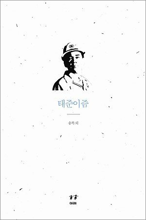
태준이즘 - 청암 박태준 연구 총서 1권
이대환, 최동주, 송복, 김왕배, 이용갑, 전상인 · 아시아 · 2012년 4월 25일
인류 문명이 철의 발전과 궤를 같이 해왔듯이 포스코의 창업자 청암 박태준이 걸어온 길은 한국 경제 성장의 역사에 맞닿아 있다. 포항제철의 설립과..

청암 박태준: Park Tae-joon: A Memorial Issue
이대환 · 아시아 · 2012년 3월 21일
이 책은 청암 박태준의 정신을 기억하고 전승하려는 시도이자, 그의 유택에 바치는 꽃이다.『청암 박태준』은 대한민국의 철강왕이었던 박태준의 타�..
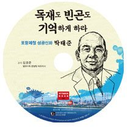
독재도 빈곤도 기억하게 하라 포항제철 성공신화 박태준
김경준 · 석세스티브이 · 2012년 2월22일
세계 1위 기업으로 이끈 포항제철 성공신화 박태준의 혼신의 경영과 인생 이야기가 담긴 오디오북. 불가능이라 여겼던 제철소 건설을 위해 박태준이 �..
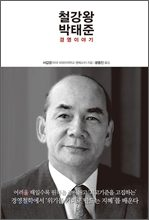
철강왕 박태준 경영이야기
서갑경 · 한언 · 2011년 12월 20일
불가능이라 여겼던 제철소 건설을 위해 박태준이 특유의 결단력과 열정으로 극복해낸 과정을 담고 있다. 나라를 위해 종합제철소 건설을 반드시 성�..
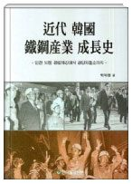
근대 한국철강선업 성장사 (인천 50톤 평로제강에서 광양제철소까지)
백덕현 저 · 한국철강신문 · 2007년 11월 15일
철강산업사. 이 책은 한국전쟁이후 경제 상황에서부터 대한중공공업사의 설립, 민간 자본 철강기업의 시작과 함께 포스코의 최근 모습에 이르기까지�..
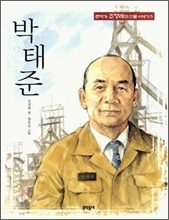
큰작가 조정래의 인물이야기-05 박태준
조정래 글/원유미 그림 · 문학동네어린이 · 2007년 10월 25일
『큰작가 조정래의 인물 이야기』는, 우리 아이들이 내일 더 멋지게 세상에 설 수 있게, 뒷모습까지 당당한 사람이 될 수 있게, 조정래 선생님이 직접..

쇳물에 흐르는 푸른 청춘 포스코 창업시대 열전
이대환 · 아시아 · 2006년 5월 20일
세계 일류 철강회사로 우뚝 솟은 포스코 신화의 숨겨진 땀과 노력의 이야기. 이 책은 종합제철 건설과 조업에 반드시 필요한 자본과 기술과 경험이 전�..
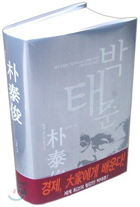
세계 최고의 철강인 박태준
이대환 · 현암사 · 2004년 12월 5일
이 책은 우리의 물적 토대를 만들기 위해 '죽도록 고생' 한 산업화시대에 대표적 공기업이었던 '포스코의 발전사'이자, 포스코를 창업하여 25년 동안 �..
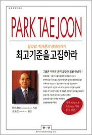
최고기준을 고집하라
K.K.SEO · 한국언론자료간행회 · 1997년 10월 22일
불과 25년만에 세계 제2위의 종합제철소를 이룩하게 된 주역 박태준 전 포항제철 회장의 경영을 자세하게 소개했다..
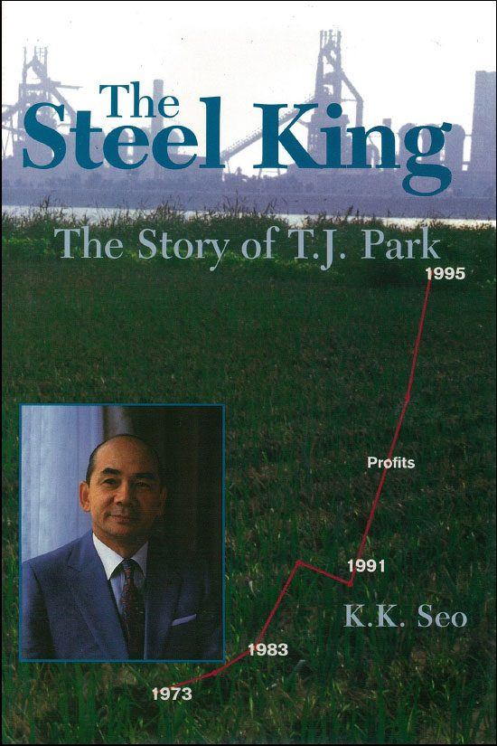
The steel king: The story of T.J. Park
K.K. Seo · Simon & Schuster · 1997년 1월 1일
Story of how Pohang Iron and Steel Co. (POSCO), an upstart Korean company, built the second largest integrated steel mill in the world. The legendary
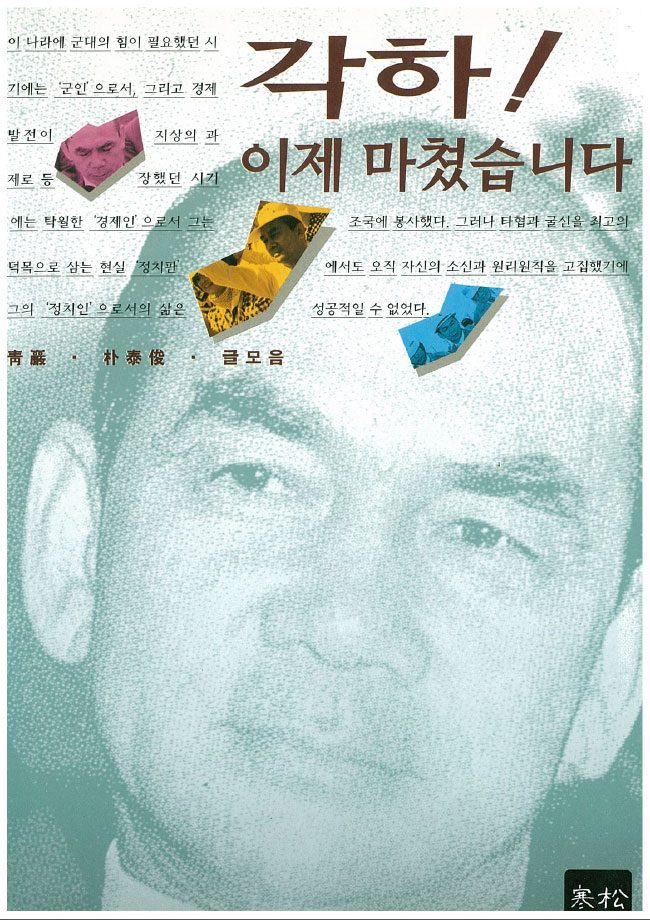
각하 이제 마쳤습니다
조용경 · 한송 · 1995년 9월 1일
포항제철 회장이었던 청암 박태준이 20여년 동안에 걸쳐 쓴 글과 연설을 모아 엮은 책. 철강분야를 비롯해 정치, 경제, 사회 등 각 분야를 진단한 글들�..
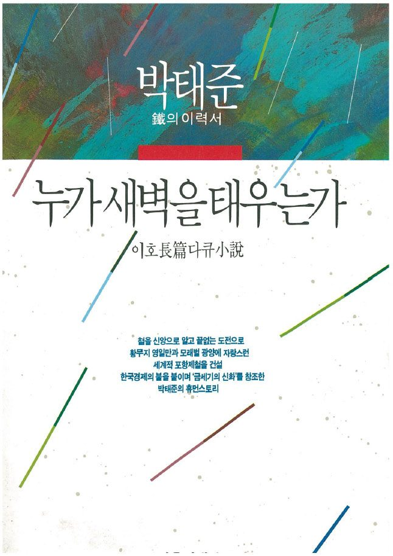
누가 새벽을 태우는가
이호 · 자유시대사 · 1992년 6월 1일
포항제철 박태준 회장의 기업 야망과 삶을 그린 소설.철을 신앙으로 알고 끝없는 도전으로 황무지 영일만과 모래벌 광양에 자랑스런 세계적 포항제철..
※ The publications and records listed here are in Korean. Titles are shown as published.